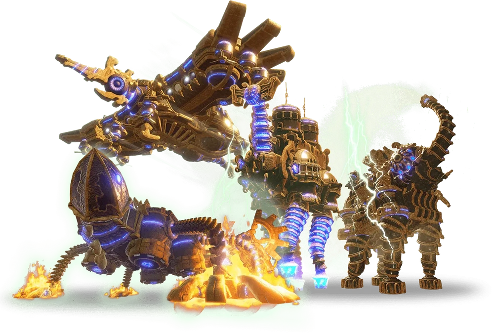

The Legend of Zelda Breath of the Wild granted players an unprecedented level of freedom compared to previous entries in the series.
The developers decided to take this game in the opposite direction of its predecessor which was known for restricting the player's
exploration in favor of having them traverse segmented dungeon like environments that felt more like videogame levels than a cohesive
world. The developers compared it to the original legend of zelda on nes. Freedom is a focus even more so in this game than that game.
Exploration
Breath of the Wild's hyrule was Nintendo's first take on an open world game. Each section of the map offers a unique biome to explore. The scenary
was truly impressive. Using link's ability to climb up any surface and glide anywhere, players could go in any direction and carve their
own unique journey through hyrule. The main gameplay loop consists of the player finding shrines and korok seeds hidden in every corner of the map.
Some shrines have intereresting riddles that must be solved in the overworld to access them. Because there is something around every corner,
the world is prevented from feeling empty. However, once the player realizes almost every reward for their exploration is just another shrine
or korok seed it does start to feel formulaic.
Breath of the Wild's Hyrule was larger than ever before!
Dungeons
Unfortunately, as impressive as the game's world is many other aspects of it fell short. The game did not feature traditional Zelda dungeons which fans of the series
expected. Instead it featured 120 shrines which were like mini dungeons and the four divine beasts. The shrines were too small and too astetically similar to be able
to deliver the same experience as a classic zelda dungeon. They were unable to build on their concepts like previous dungeons could. The divine beasts were short, aestetically
similar, shared similar bosses, and contained almost no enemies. The entire beast is open to the player from the start; there are no locked doors. The player can
manipulate the beast's body in unique ways, but because they can do it at any time they do not have to think too hard about it like with previous puzzle box
dungeons like the water temple.

The Divine Beasts
Difficulty
A major problem with the game was its sense of progression. Even though more powerful monsters appear, those monsters drop more powerful items so nothing really changes.
After the first few hours the player will have encounted almost every enemy, and the enemies will not get stronger beyond simple stat changes. In fact
the game's combat actually gets easier as it progresses because the player can upgrade their armor which reduces almost all enemy damage. The puzzles also cannot
increase in difficulty because due to the freedom of the game any puzzle could be the player's first puzzle.
Story
The game does not feature a story which plays out as the player progresses. Instead most of the important plot points happened in the past. Because the player
had so much freedom it would have been difficult for Nintendo to craft a compelling story.